01 — Overview
The Living Atlas is my personal portfolio site, and the fifth version of it. I come from fine arts, with experience in painting, media arts, cinematography, 3D and video, and I now focus on UX/UI design. Every version of this site has been an attempt to show all of that without it reading as scattered. I built it from scratch in HTML, CSS and JavaScript with Claude, rebuilding it each time I learned more about what a portfolio needs to do.
The name describes where the site is heading. An atlas holds many different territories in one book, the way my work spans research, interfaces and art. “Living” means it keeps adapting, the way I want my designs to adapt to different minds and contexts.
02 — Learning About Myself
My earlier portfolios gave everything the same weight. UX case studies, fine art paintings and a pixel-art character all sat under the same skeuomorphic folder icons and brass borders, so a reviewer couldn’t tell what my main work was. When I fixed that with a clean, systematic green theme, I ran into the opposite problem: the site became so geometric and minimal that it felt generic, closer to an AI template than to me.
Build a portfolio that is organized enough for a reviewer to skim in under a minute, but personal enough that it couldn’t belong to anyone else. The structure should stay precise and modern; the feeling should be natural, fluid and calm, without tipping into something antique.
03 — Ideation
Phase 01 — Paper Sketches
Before writing any code, I sketched what sections a portfolio even needed: a homepage, an About page, and a portfolio page organized into folders.
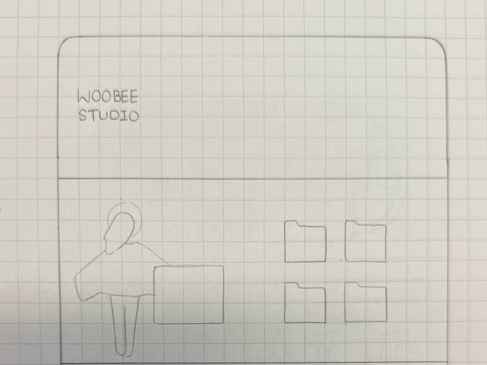
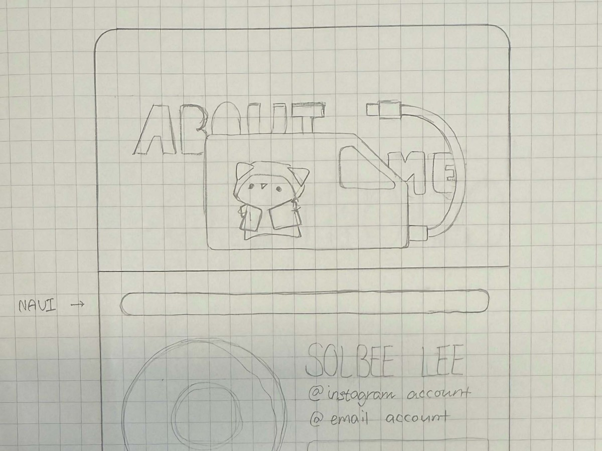
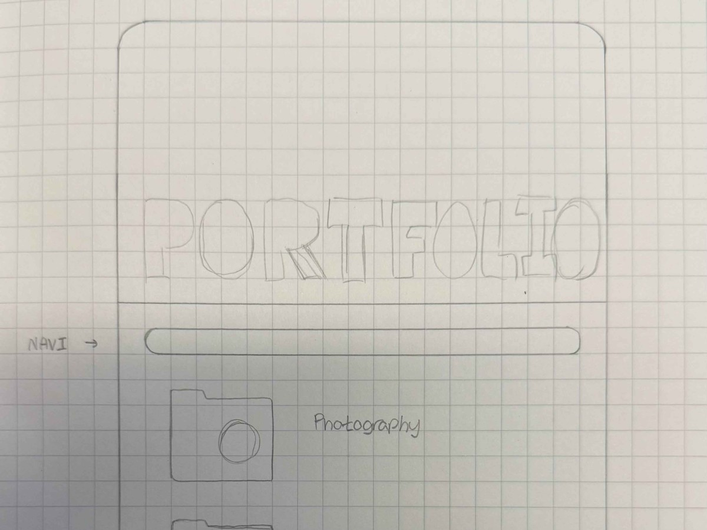
Phase 02 — Moribee Studio
My first built site, with a hand-painted koi fish hero. It was the first time I shipped a real multi-page site, but each page was built separately, with no shared system.
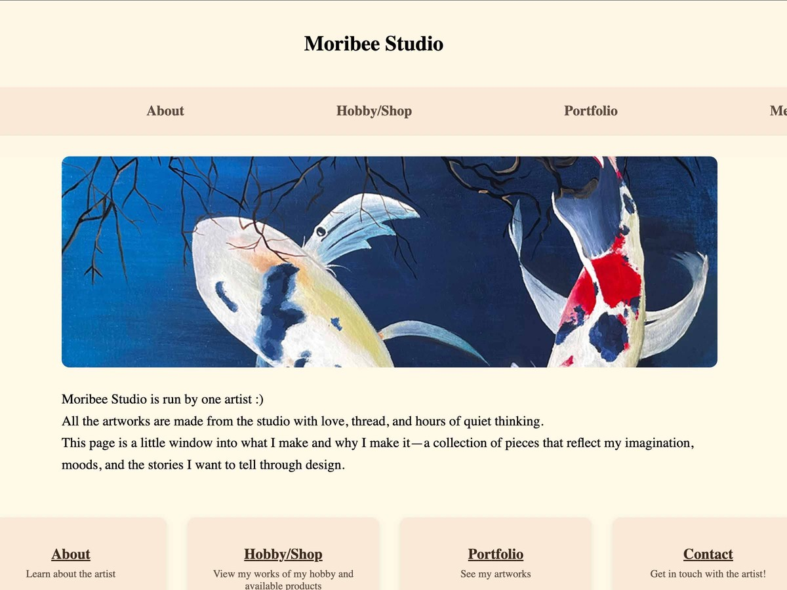
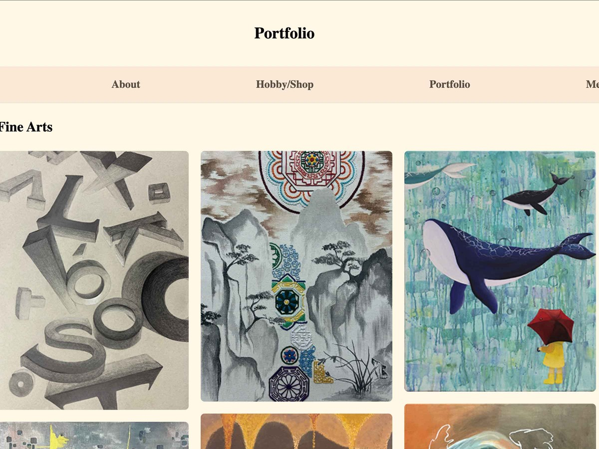
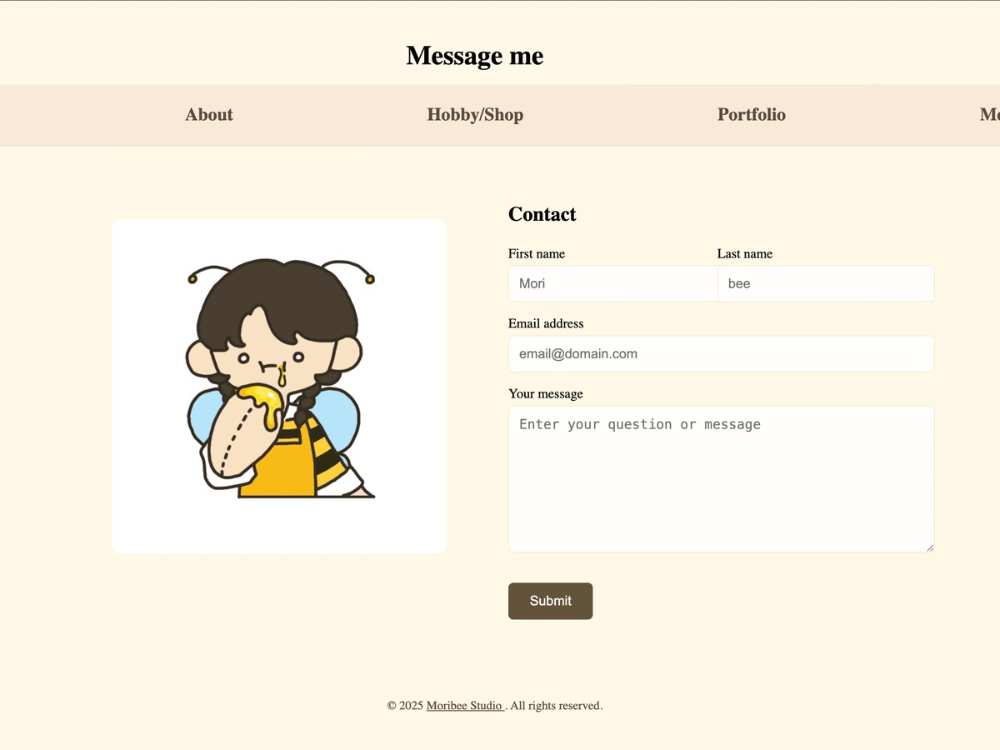
Phase 03 — Studio Woobee → Woobee Archive
A stronger identity: one hero, one palette, one mascot, and folder-icon navigation over a rainy pond illustration. It looked charming, but the folder icons weren’t self-explanatory, and every kind of work still had equal weight.
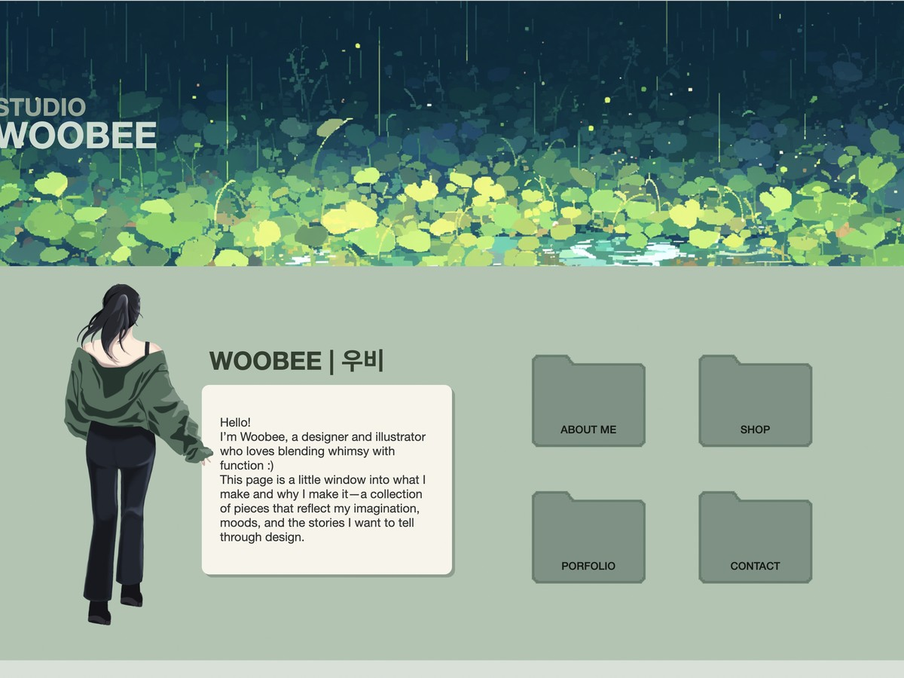
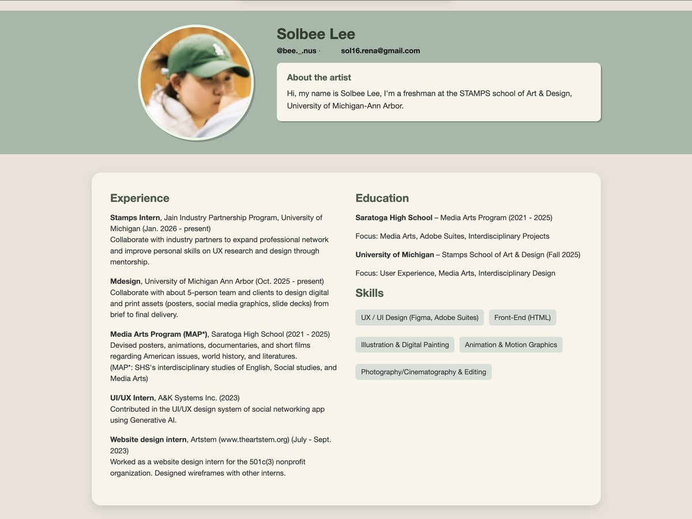
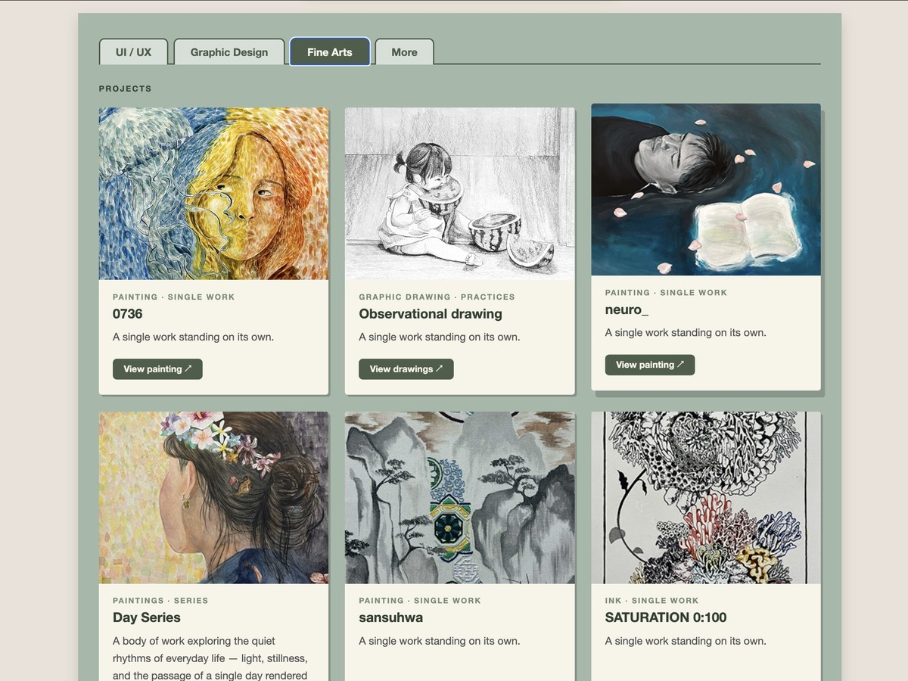
Phase 04 — The Green System
A full rebuild around a professional, component-based system: porcelain and evergreen as two anchor colors, serif type reserved for names and titles, mono labels, thin hairlines instead of borders, and one shared stylesheet for every page. It fixed the hierarchy, but the landing page started to feel too geometric and impersonal.
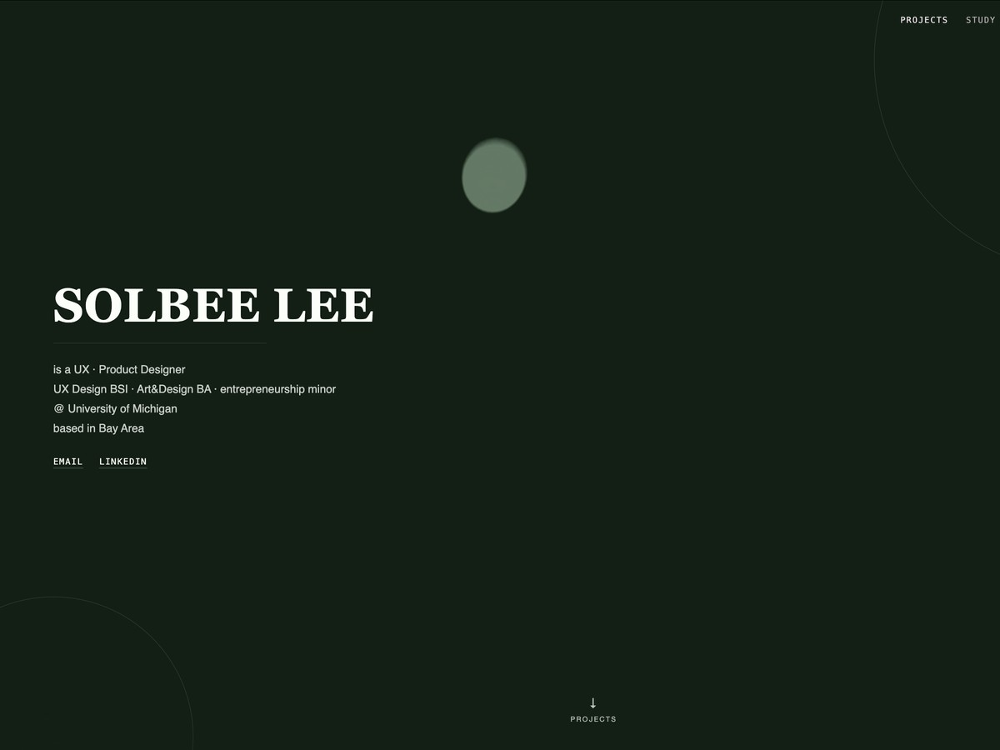
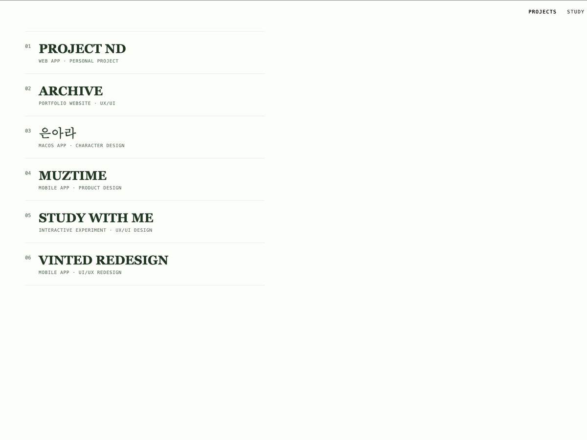
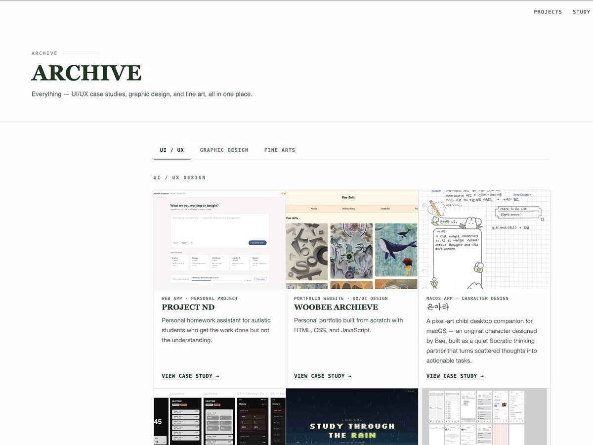
Phase 05 — Finding the Living Atlas
To find what was missing, I started from words instead of visuals. I listed what I see in myself and my work: books, knowledge, botanical forms, neurodivergence, psychological development, context, simplicity, learning, process and water, especially water’s flexibility and adaptability. Using AI as a sparring partner, I worked those words into three ideas:
- Roots — understanding: looking past behavior to the context it comes from.
- Water — adaptation: no single right way to think, and design that bends to different minds.
- Growth — development: valuing the process of learning and iterating over a perfect result.
The first direction that came out of this leaned into a vintage botanical journal, and I rejected it as too antique. I wanted the intelligence of academia, not its old paper. That narrowed the direction to modern organic academia: a precise, modern system with a quiet natural, fluid layer inside it. This introduced a broader design question:
How can a portfolio feel natural and personal while staying as clear and skimmable as a system?
04 — Design & Prototyping
I designed the site directly in code with Claude, iterating on live pages instead of static mockups. That let me test real behavior like scrolling, hovering and pinning, but it also meant every change was visible immediately, including the ones that didn’t work.
Design Principles
- Rooted in understanding, fluid in approach: a strict structure underneath, with organic movement only where it adds meaning.
- Mostly system, a little nature: the grid, type and labels do most of the work; fluid, organic elements are an accent, not the style.
- Color is quiet, composition is bold: evergreen as the identity, porcelain as breathing space, and one accent, so the work carries the visual weight.
- Exposed structure: numbered sections, mono labels and hairlines make the organization visible, like a spec sheet.
- One system, many personalities: every case study shares the same tokens and layout, and differs only in its own hero moment.
Design Decisions
- A transparent nav that became a solid bar. The nav first floated over the page with no background and inverted its color to stay readable. Content scrolled underneath it and collided with the links. Trade-off: a solid bar takes a strip of every screen, but it never competes with the content.
- One accent color, not one per project. I tried giving each case study its own accent and removed it, because the pages started to feel like separate sites. Trade-off: less variety, but the portfolio reads as one body of work.
- Modern, not antique. I kept porcelain, evergreen and the spec-sheet structure, and cut anything that read as aged: yellowed paper, brass, gothic type, sepia tones. Trade-off: less instant “dark academia” mood, but the site looks current.
- Three hero experiments, and why they’re not enough. The landing went from a cursor spotlight, to pond ripples, to drifting blobs that merge as you move. Each was better than the last, but all three are abstract shapes, and drifting blobs are now a common look on AI-generated sites. The next hero is my own: a top-down teacup overflowing, leaves floating on the surface, and the spilled tea spreading across the page, with the cursor leaving a trail like the wake behind a boat.